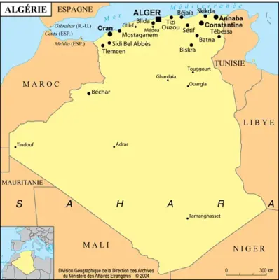

Accueil
Accueil Personnages
Personnages Oeuvres
OeuvresPrésentation de l'Algérie
L’Algérie est un État d’Afrique du Nord qui fait partie du Maghreb dont sa capitale est Alger. Elle partage des frontières terrestres avec la Tunisie, la Libye, Niger, le Mali mais aussi avec la Mauritanie et le Maroc. Sa Superficie est d'environ 2 381 741 km². Sa population est à peu près de 44 millions d'habitants, pour une densité de 18,4 hab. /km². De plus, l'Algérie possède sur son territoire une grande variété de paysages et d'écosystèmes : on peut passer du Désert du Sahara au centre aux Montagnes enneigées de Kabylie au Nord
